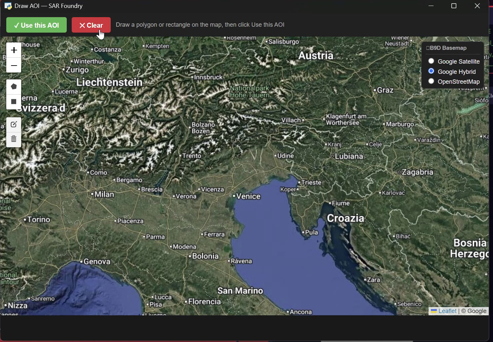
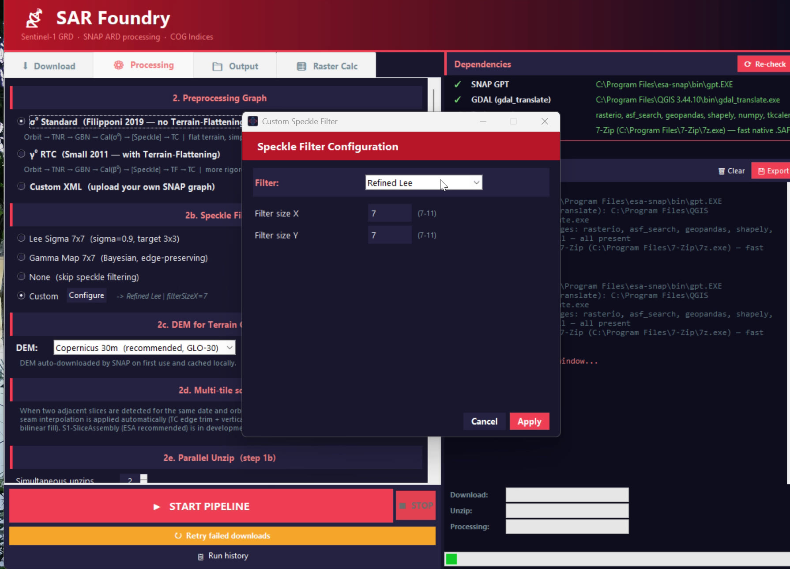
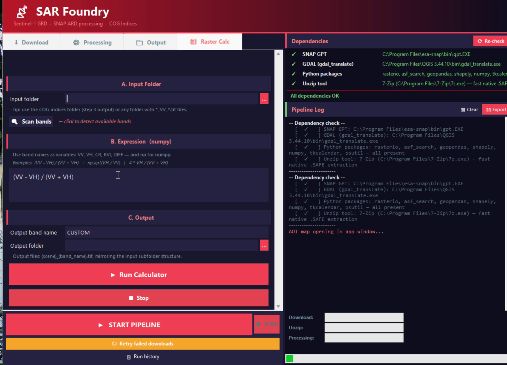
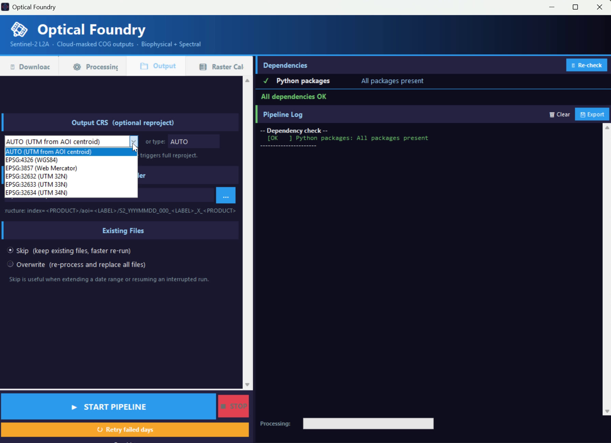
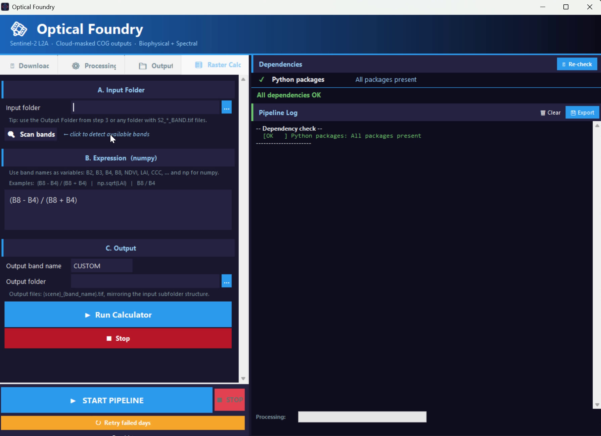
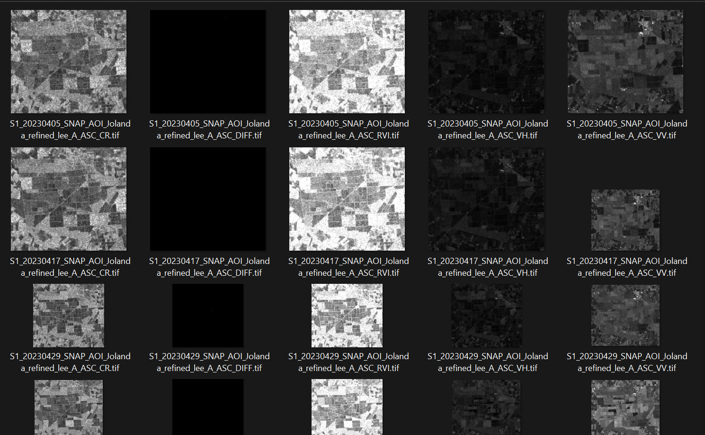
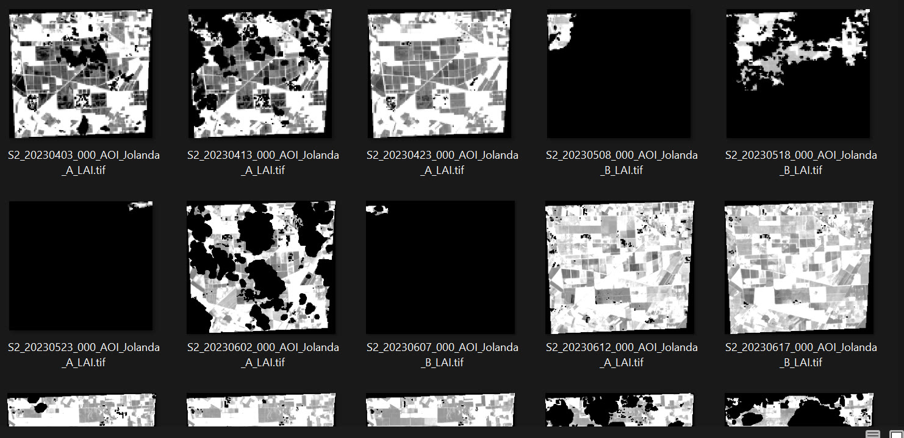

From raw Sentinel scenes to analysis-ready data — without the command line.
Sentinel Foundry is a pair of guided desktop tools that download Sentinel-1 and Sentinel-2 imagery and turn it into clean, Cloud-Optimized GeoTIFF indices for analysis — built on ESA SNAP and GDAL.
Two focused applications, one consistent workflow.
Each tool walks you through the full chain in a single window: pick an area of interest (file or drawn on a map) and a date range, download the scenes, run the scientific preprocessing, and write the results as 10 m Cloud-Optimized GeoTIFFs ready for GIS or machine learning. Dependencies are checked up front, downloads are verified for integrity, and long jobs report live progress and ETA.
Setting the area of interest — Draw on map opens an interactive Google-satellite basemap (SAR Foundry).
The two foundries
Sentinel-1 (radar) and Sentinel-2 (optical), each tailored to its sensor.
SAR Foundry
Sentinel-1 GRD · SNAP ARD · COG indices
Backscatter and polarimetric indices from Sentinel-1, processed through a rigorous ESA SNAP chain.
Download from ASF (NASA Earthdata) or Copernicus CDSE, with retry, resume and integrity checks
SNAP preprocessing: σ⁰ Standard or γ⁰ RTC presets, or your own graph
Configurable speckle filter and terrain-correction DEM
Surface-reflectance bands, spectral indices and biophysical variables from Sentinel-2.
Free, anonymous download from AWS EarthSearch (no account needed)
Scene-classification (SCL) cloud masking
Biophysical variables: LAI, CWC, FAPAR, FCOVER
Indices (NDVI, NDWI, NDII, EVI, …) and bands B2–B12 — plus custom indices
SAR Foundry — Download tab: source, area of interest, dates and orbit, with dependency checks and a live pipeline log.Optical Foundry — Download tab: AOI, date range, cloud-cover threshold and parallel workers for Sentinel-2 L2A.
Installation & quick start
Windows, macOS or Linux. Python handles its own environment on first run.
Requirement
Notes
Python 3.11 or 3.12
The app creates its own virtual environment and installs packages on first launch.
ESA SNAP
Must include the Microwave Toolbox (the Sentinel-1 / SAR toolbox; called “Sentinel-1 Toolbox / S1TBX” in SNAP ≤ 11). Needed by SAR Foundry only.
GDAL
For writing Cloud-Optimized GeoTIFFs (e.g. via QGIS or OSGeo4W).
Option A — download a ready-made build (no git needed). Grab the zip for your OS from the Releases page, extract it anywhere, and double-click Sentinel Foundry. Keep everything together in the extracted folder — the launcher looks for the pipeline scripts next to itself. The builds are unsigned, so the first launch shows a one-time security warning (see the note below).
Option B — clone and run from source. Open the launcher — it builds the environment for you on first use:
# get the code
git clone https://github.com/EnMaga/sentinel-foundry.git
cd sentinel-foundry
# open the launcher: pick SAR or Optical from one window
python sentinel_foundry.py
# optional: put a desktop icon (Windows / macOS / Linux)
python install_sentinelfoundry.py
The launcher creates one shared virtual environment in the repo folder and installs only the chosen tool’s Python packages the first time you open it (a progress bar shows while it works); later launches reuse it. You can still start a tool directly with python s1_pipeline_ui.py (SAR) or python s2_pipeline_ui.py (Optical).
SNAP tip: when installing ESA SNAP, keep the Microwave Toolbox component ticked (called Sentinel-1 Toolbox / S1TBX in SNAP ≤ 11) and run Help → Check for Updates once. SAR Foundry checks this at startup and blocks START with a clear message if the toolbox is missing — so you find out before a run, not after every scene fails. Full requirements and a troubleshooting guide are in the README.
Unsigned build: the installers carry no paid code-signing certificate, so your OS warns you once on first launch — Windows SmartScreen (More info → Run anyway), macOS Gatekeeper (right-click → Open), or a chmod +x on Linux. This is about the missing signature, not the app.
Tutorial — using the apps
A guided walkthrough of each window, from area of interest to finished COGs.
The launcher — open SAR Foundry or Optical Foundry from one window; it sets up the environment on first use.
SAR Foundry — step by step
Pick a source in the Download tab: ASF (NASA Earthdata bearer token), Copernicus CDSE (refresh/offline token — no password stored), or an existing .SAFE folder. CDSE downloads run up to 5 in parallel and resume a dropped transfer via HTTP Range; ASF is sequential (parallel connections truncate its VV band). Live Mbps is shown per scene.
Set the area of interest: browse to a .shp/.gpkg/.geojson, or click Draw on map. Any CRS is auto-reprojected.
Choose dates and orbit (ASC, DSC or Both).
Processing tab: pick the preprocessing graph (σ⁰ standard, γ⁰ RTC, or a custom XML), the speckle filter, and the DEM.
Parallel SNAP jobs: start with 1 the first time (lets the DEM cache populate cleanly); raise it later if RAM allows.
Output tab: choose bands (VV, VH, CR, RVI, DIFF), linear/dB scale, the three output folders, and the CRS.
Check the Dependencies panel is green (SNAP GPT incl. Microwave Toolbox, GDAL, Python packages), then press START. On a re-run the progress bar and ETA are skip-aware — already-finished scenes are pre-counted, so the bar reflects real remaining work.
Verify: downloads are integrity-checked before, during and after unzip (truncated or corrupt archives are dropped so SNAP never sees them). Afterwards run check_safe.py on the SAFE folder to re-confirm; its --delete mode is guarded — on a broken GDAL environment it refuses the deep read rather than mass-deleting valid scenes.
Example. Sentinel-1 sigma-nought over an agricultural AOI, August-December, descending orbit, Lee Sigma speckle filter, Copernicus 30 m DEM → 5 COG bands per scene in a DSC/ folder.
Topping up a run. Pressing START again over the same dates does not check your finished outputs to decide what to download — it only skips scenes whose .zip/.SAFE are still on disk, so if you deleted the .SAFE after conversion it re-downloads the whole range (SNAP and indices still skip finished dates, so nothing is reprocessed). To fetch only the dates you're missing, use ↻ Continue downloading / Check missing dates in the footer instead: it skips every date that already exists at any stage — zip, .SAFE, SNAP GeoTIFF, final product, or a .done marker — so it's the right way to extend or repair a timeseries.
Running many AOIs (Batch tab). Process several areas in one sequential run. Pick Uniform (one recipe for all), All combinations (a grid — it uses the Download tab's date range for every combination), or Per-AOI (each row gets its own pipeline, DEM, dates, and a ⚙ button to tune that AOI's speckle parameters independently; the header's ⇩ apply-to-all buttons copy row 1's value down a single column). In batch mode the bars adapt: a top AOI k/N bar tracks which area is running, and the Batch bar counts whole chunks (chunk k/~N) instead of files. .done resume-markers live in a Done_files_S1\ folder beside the finals; the markers are AOI-label-scoped, so areas never interfere even when they share the merged finals folder. When a clean run finishes, a reminder offers to run the coverage check (Continue downloading / Check missing dates) and, once you've confirmed nothing's missing, to delete those markers — your finals are never touched.
Where batch outputs go (and reuse).Changed in v1.0.14: every AOI's finals for a recipe now land together in one pipeline-first folder — <base>\<preset>_<speckle>\ASC|DSC\ (DEM dropped from the folder name but kept in each filename) — told apart by the AOI label in each .tif. Downloads stay per-AOI in …\<AOI-stem>\_safe\. Skip/marker globs are AOI-label-scoped, so merged AOIs never skip each other's dates. A batch reuses data on disk only when it lands on that exact path (same base + preset + speckle for finals, same AOI file name for downloads); the AOI match key is the file name, not its geometry. ⚠ Pre-v1.0.14 batch outputs used a per-AOI <AOI>\<combo>\ layout and won't be found — they reprocess into the new merged folder. A stopped batch resumes cheaply: dates that already have a final aren't re-downloaded or reprocessed.
Field-clustering in batch — BETA (v1.0.14, not yet live-tested). With the Cluster AOI checkbox on, batch now crops SNAP to tight per-field clusters like the single-AOI tool (one global toggle for the whole batch), clustering from each AOI's own polygons; finals carry a per-cluster tag. With it off, batch runs SNAP over the whole AOI bbox as before. This path is new and hasn't yet been live-tested on a real multi-AOI batch — verify your first clustered run.
The tabs, one by one

Download → Draw on map. Sketch a polygon or rectangle on a Leaflet map (Google Hybrid / Satellite / OpenStreetMap basemaps) and click Use this AOI — no file needed.Processing. Preprocessing graph (σ⁰ Standard, γ⁰ RTC or custom XML), speckle filter, DEM, multi-tile seam handling and parallel unzip.

Processing → custom speckle filter. The Configure button opens all nine SNAP speckle filters (here Refined Lee, 7×7); the choice is written into every output filename.Output. Choose bands (VV, VH, CR, RVI, DIFF) and scale, set parallel SNAP jobs and JVM heap, index workers, the three output folders and the CRS.

Raster Calc. Post-processing calculator — apply a NumPy expression such as (VV - VH)/(VV + VH) to existing COG bands.
Optical Foundry — step by step
Set the area of interest (same formats as SAR). No account needed — data comes from public AWS EarthSearch.
Choose the date range.
Max cloud cover: 0 = SCL mask only; >0 = also skip whole scenes above that cloud %.
Parallel workers: how many days to process at once (1–8, I/O-bound). Failed days can be auto-retried, and a live ETA is shown from average seconds per day.
Pick outputs: biophysical variables (LAI, CCC, CWC, FAPAR, FCOVER), spectral bands (B2-B12), and indices (NDVI, NDWI, ...) — plus any custom index.
Set the output folder and CRS, choose Skip (resume) or Overwrite for existing files, then press START. AOIs spanning two MGRS tiles are processed per-tile and mosaicked into one file per date.
Example. Sentinel-2 NDVI + LAI over the same AOI, one growing season, cloud cover ≤ 40% → cloud-masked 10 m COGs, one file per index per date.
The tabs, one by one
Processing. Toggle biophysical variables (LAI, CCC, CWC, FAPAR, FCOVER), spectral bands (B2–B12) and indices (NDVI, NDWI, NDII, EVI, MSAVI2, …), plus up to three custom NumPy indices.

Output. Output CRS (AUTO native UTM or any EPSG) and the existing-file policy — Skip to resume a run, Overwrite to rebuild every file.

Raster Calc. The same calculator as SAR — compute custom NumPy expressions over any existing Sentinel-2 COG output.
Tip: both tools can also be opened from the unified launcher (sentinel_foundry.py), and the Raster Calc tab lets you compute custom NumPy expressions on any existing COG output.
Every output records how it was made — area of interest, speckle filter, DEM and preprocessing graph — directly in the filename, so results stay traceable across experiments. Both foundries follow the same convention.

SAR Foundry output — five single-band COGs per date (CR, DIFF, RVI, VH, VV) in the ASC/ folder. The name encodes AOI, speckle filter (refined_lee), orbit and band; DIFF (VH−VV, linear) is near-black by nature.

Optical Foundry output — cloud-masked LAI, one COG per acquisition date (black = SCL-masked cloud / nodata), named by date, AOI and satellite letter (A/B).
Citing & references
If Sentinel Foundry supports your research, please cite the repository and the underlying tools.
Software: Magazzino, E. (2026). Sentinel Foundry (v1.0.14) [Computer software]. github.com/EnMaga/sentinel-foundry. APA/BibTeX are also available via “Cite this repository” on GitHub (from CITATION.cff).
Underlying methods and tools
Zühlke, M. et al. (2015). SNAP (Sentinel Application Platform) and the ESA Sentinel 3 Toolbox. ESA Living Planet Symposium.
Filipponi, F. (2019). Sentinel-1 GRD preprocessing workflow. Proceedings 18(1), 11.
Small, D. (2011). Flattening gamma: radiometric terrain correction for SAR imagery. IEEE TGRS 49(8), 3081-3093.
Trudel, M., Charbonneau, F., Leconte, R. (2012). Using RADARSAT-2 polarimetric and ENVISAT-ASAR dual-polarization data for estimating soil moisture over agricultural fields. Canadian Journal of Remote Sensing 38(4), 514-527.
Gillies, S. et al. (2013-). Rasterio: geospatial raster I/O for Python.
Alaska Satellite Facility (ASF), NASA Earthdata; Copernicus Data Space Ecosystem (CDSE); AWS Open Data - Sentinel-2 L2A COGs.